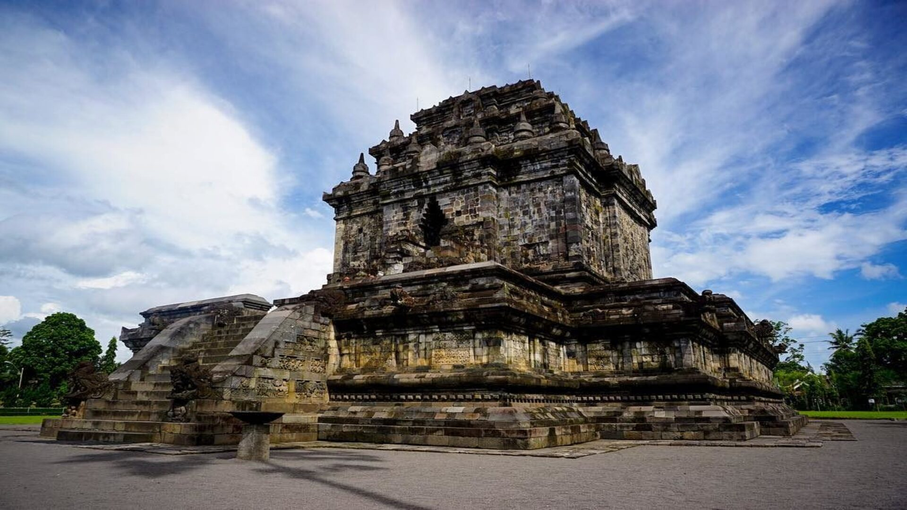

Preview Destinasi
| Candi Borobudur | Candi Mendut |
|---|---|
|
Keajaiban dunia yang menjadi ikon Magelang.Tempat wisata Magelang yang ini sudah resmi dinobatkan sebagai warisan budaya UNESCO. Di kawasan candi juga Anda bisa mengunjungi 3 museum yaitu Museum Borobudur, Museum Kapal Samudraraksa, dan Museum MURI. |

Candi bersejarah yang dekat dengan Borobudur.Wisata Magelang lainnya yang masih dalam seputaran candi adalah candi Mendut. Selain menjadi pusat praktik dan ritual agama Buddha, tempat ini juga diyakini oleh penganut Kejawen Jawa sebagai tempat meditasi. |
| Punthuk Setumbu | Svargabumi |

Spot matahari terbit terbaik di Magelang.Untuk mencapai area ini, Anda harus trekking selama 15 menit hingga mencapai puncaknya. Lokasinya ada di kawasan Desa Karangrejo dan menjadi spot wisatawan untuk menikmati matahari terbit di pagi hari. Dari puncaknya, Anda akan bisa menikmati panorama Candi Borobudur dari kejauhan sambil menikmati udara pagi yang sangat sejuk dan segar. |

Destinasi dengan pemandangan sawah modern. Ini adalah sebuah area persawahan yang letaknya tidak jauh dari Candi Borobudur. Svargabumi sering kali disamakan dengan wilayah Ubud, Bali. Anda akan menemukan banyak spot foto yang sangat indah ditemani udara yang sejuk dan menyegarkan. Selain itu Anda bisa menikmati wahana ayunan ranjang atau floating breakfast di kolam renang. |